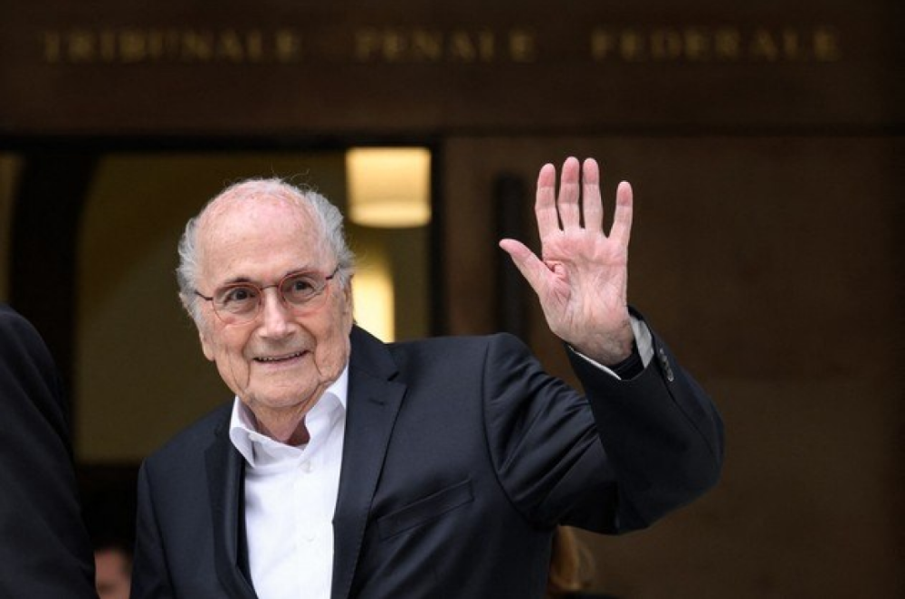

Site de Notícias mais confiavel do Brasil
HBNEWS
A Globo decidiu expulsar os participantes do Big Brother Brasil MC Guimê e Cara de Sapato, nesta quinta-feira (16), depois de a Delegacia de Atendimento à Mulher de Jacarepaguá abrir um inquérito para investigar importunação sexual dentro da casa. Os participantes estão confinados em uma mansão da zona oeste do Rio de Janeiro. Imagens das câmeras do reality show mostraram os dois participantes tentando contato físico com a atriz e modelo mexicana Dania Mendez durante uma festa realizada na noite de quarta-feira (15). Dania visita o Brasil em uma espécie de intercâmbio com o programa mexicano “La Casa de Los Famosos”. O apresentador Tadeu Schmidt disse que eles “contrariaram as regras da casa”.
Em meio a uma série de denúncias de corrupção que estremecem a Fifa, o presidente da entidade, Joseph Blatter, renunciou ao comando da instituição na terça-feira, dia 2, apenas quatro dias após ter sido reeleito pela quinta vez para o comando da entidade máxima do futebol mundial. No dia anterior à sua renúncia, o jornal “The New York Times” divulgou documentos que mostram que o secretário-geral da Fifa e braço direito de Blatter, Jérôme Valcke, tinha conhecimento do pagamento de propina de US$ 10 milhões a um cartola do Caribe como retribuição a seu voto em favor da África do Sul com sede do Mundial de 2010. Há 17 anos na Presidência da Fifa (e 34 anos dentro da organização), Blatter está cada dia mais encurralado pelo maior escândalo da história da entidade. Curiosamente, logo após a sua última eleição, ao ser questionado sobre a possibilidade de renunciar em função da série de denúncias, ele disse: "Por que deveria renunciar? Isso seria como reconhecer que fiz algo ruim". Prisão de cartolas Na última semana, oito membros do Comitê Executivo da Fifa, dentre eles o ex-presidente da CBF (Confederação Brasileira de Futebol) José Maria Marin, foram presos acusados de corrupção. As investigações do FBI e do Departamento de Justiça dos Estados Unidos revelam que os dirigentes estão envolvidos em extorsão, fraude eletrônica e conspiração para lavagem de dinheiro. A Fifa teria movimentado mais de US$ 100 milhões em propina desde os anos 90. Representantes de empresas de transmissão e marketing esportivo também estariam envolvidos no pagamento de propina a altos funcionários da Federação e organizações a ela filiadas (como a Concacaf, Conmebol e CBF) em troca de direitos de transmissão e de marketing em competições organizadas pela entidade. Segundo a Justiça norte-americana, duas organizações e quatro acusados já confessaram envolvimento nos crimes, dentre eles o brasileiro J. Hawilla, dono da Traffic, a maior agência de marketing esportivo da América Latina. A apuração também indica que houve corrupção no processo de escolha das Copas de 2018 e 2022, na Rússia e Qatar, respectivamente. Corrupção na CBF As investigações do FBI começam a respingar no Brasil e podem trazer à tona um lamaçal de corrupção há muito tempo denunciado no país. Muitos políticos estão de cabelo em pé, preocupados com o que pode ser descoberto, bem como a alta direção da Rede Globo, que tem uma "parceria" de longa data com CBF e seus tentáculos. A Polícia Federal do Rio de Janeiro já confirmou a abertura de inquérito para apurar indícios de corrupção em competições organizadas pela Fifa e CBF. O Senado também aprovou a abertura de uma CPI para investigar irregularidades. Uma coisa é certa: se as investigações forem a fundo, muita sujeira deve aparecer por aqui, já que – não é segredo para ninguém – a Fifa impôs todas as suas vontades para a realização da Copa do Mundo do Brasil, que rendeu um lucro nada modesto de R$ 16 bilhões para a organização. Além disso, não custa lembrar que os governos Lula e Dilma (PT) e parlamentares de todos os grandes partidos se curvaram diante dos desmandos da entidade (inclusive, com isenção de impostos). Vamos ver como este jogo termina...
O presidente da LaLiga, Javier Tebas, falou com exclusividade ao ge nesta quarta-feira sobre o todo o racismo enfrentado pelo atacante Vinicius Junior no Campeonato Espanhol, cujo episódio mais recente foi no último domingo, no jogo do Real Madrid contra o Valencia. Tebas pediu desculpas ao jogador em relação às polêmicas nas redes sociais.
.png)
A minissérie baseada no incêndio da Boate Kiss, uma das maiores tragédias já vistas no país, estreou em primeiro lugar entre séries na Netflix. Todo Dia a Mesma Noite estreou nesta quarta-feira (25), adaptando o livro-reportagem de mesmo nome de Daniela Arbex.